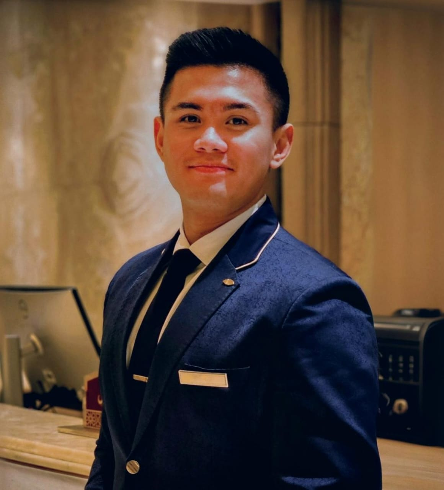

Teja Yusuf Imanuel

Summary
Experienced Front Office Supervisor with over 5 years of expertise in luxury hotel and resort settings. Demonstrates strong leadership skills and the ability to thrive in diverse environments, fostering teamwork and enhancing guest satisfaction. Proficient in Opera and Micros PMS, with a deep understanding of front office operations, reservations, and guest relations. Graduated from Transbuana Training Center, equipped with a solid foundation in hospitality management.
Education
- Trans Buana Training Center, indonesia (2018-2019)
- Marine Vocational Highschool Jakarta Raya, Indonesia (2015-2017)
Work Experience
Emirates Palace Mandarin Oriental, Abu Dhabi, United Arab Emirates
Front Office Supervisor
Jun 2023 - Present
- Supervise Front Desk staff to ensure they provide excellent customer service.
- Monitor daily operations of Front Desk including, cleanliness, equipment, check‑in, check‑out and the guests' request.
- Ensure the accuracy of the billing and payment process.
- Providing training related with Front Office operation such as: upselling, billing, guests' engagement
The Cove Rotana Hotel and Resort, Ras Al Khaimah, United Arab Emirates
Guest Services Team Leader
Oct 2022 - Jun 2023
- Create seamless and smooth arrival experience for VIPs of the day.
- Maintain effective communication with all related department to ensure a smooth service delivery.
- Inspect daily guestsʼ rooms and communicate with Housekeeping and F&B for room treatmentfollowing the set standard procedure.
- Deal promptly, efficiently and pleasantly with any queries and resolve guest complaint that may raise.
Front Office Agent
Jul 2021 - Oct 2022
- Greet all guests with warm and friendly welcome.
- Perform opening and closing duties, cashiering.
- Maintain a clean, organized working area.
Waiter
Apr 2019 - Jul 2021
- Provide excellent service and recommendations to guests.
- Maintain a clean, organized working environment.
- Regularly develop relationships with regular customers to promote top customer service standards.
Skills
- Leadership
- Customer Service
- Problem Solving
- Opera PMS
- Microsoft Office
Other